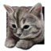

ぐぬぬスロット GununuSlot
GUNUNU SLOT — HTML5 REMAKE
2012年頃に VC++2008 で作ったスロットマシンを、そのままブラウザで。
↗ GitHub
スロットマシン（一応ゲーム）です。ぐぬぬキャラのドラムがくるくる回って、ストップボタンでゆっくり滑らかに停止します。 2012年頃に Visual C++ 2008（C++/CLI + Windows Forms）で作った作品を、 プラグイン不要の HTML5 / Canvas に移植して復刻しました。 ドラムの画像もコマ境界の赤線も減速カーブも、原作のコードそのままです。滑らかさをお楽しみください。
あそびかたHOW TO PLAY
STEP 1
START で回す
3本のドラムが毎回ランダムな速度で回り出します（原作コードで速度 20＋rand(200)）。Spaceキーでも回せます。
STEP 2
STOP で止める
1本ずつ減速し、コマにぴったり整列してゆっくり停止。この滑らかさが本作の見どころです。キー1・2・3でも止められます。
STEP 3
中央の段をそろえる
中央段の絵柄が3つそろうと、画面右下に申し訳程度に小さく「当り！！」。止まった後にもう一度STOPを押すと1コマだけ進みます。
この復刻についてFACTS
2012年頃
Visual C++ 2008（C++/CLI + Windows Forms）製として誕生
C++/CLI → HTML5
DoEventsループを requestAnimationFrame に置き換え。減速カーブ（−8→−3→−1）は原作の値そのまま
3ドラム・計37コマ
ぐぬぬ顔10種＋ぬこ2種の画像を原作ファイルのまま再利用（11＋12＋14コマ構成）
UML図つき
リポジトリにはクラス図・シーケンス図（Excel）も同梱。設計から追える教材構成
原作について（リポジトリREADMEより）
「スロットマシン（一応ゲーム）です。ぐぬぬキャラのドラムがくるくる回って、ストップボタンでゆっくり滑らかに停止します。滑らかさをお楽しみください。」
——ドラム停止の気持ちよさを主役にした小品。停止済みドラムをもう一度押すと1コマ進む遊び（ソース内の呼び名は「詐欺モード」）も原作どおり搭載しています。